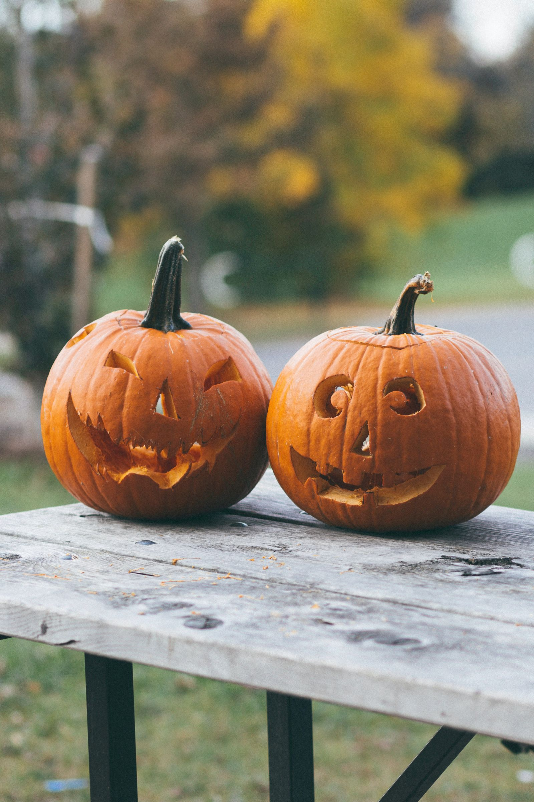

Halloween
A Halloweent minden évben október 31-én ünnepeljük. A hagyomány az ősi kelta Samhain ünnepből ered, amikor az emberek máglyát gyújtottak és jelmezeket viseltek, hogy elűzzék a szellemeket. A nyolcadik században III. Gergely pápa november 1-jét a szentek tiszteletére jelölte ki. Hamarosan a Mindenszentek napja magába olvasztotta a Samhain hagyományainak egy részét. Az azt megelőző estét Mindenszentek estéjének, később pedig Halloweennek nevezték. Idővel a Halloween szerves részévé vált a lámpásfaragás, az ünnepi összejövetelek, a jelmezek viselése és a finomságok fogyasztása.
Fekete macskák és szellemek
A Halloween mindig is rejtélyekkel, varázslattal és babonákkal teli ünnep volt. Kelta nyár végi ünnepként kezdődött, amely során az emberek különösen közel érezték magukat elhunyt rokonokhoz és barátokhoz. Ezeknek a barátságos szellemeknek terítettek helyet a vacsoraasztalnál, finomságokat hagytak az ajtókon és az út szélén, és gyertyákat gyújtottak, hogy segítsenek a szeretteiknek visszatalálni a szellemvilágba.
A mai halloweeni szellemeket gyakran félelmetesebbnek és rosszindulatúbbnak ábrázolják, és a szokásaink és babonáink is ijesztőbbek. Kerüljük a fekete macskákkal való kereszteződést, attól tartva, hogy balszerencsét hoznak. Ez az elképzelés a középkorban gyökerezik, amikor sokan úgy hitték, hogy a boszorkányok úgy kerülhetik el a lebukást, hogy fekete macskává változtatják magukat.
Ugyanebből az okból kifolyólag igyekszünk nem létrák alatt járni. Ez a babona talán az ókori egyiptomiaktól származik, akik úgy hitték, hogy a háromszögek szentek (talán ahhoz is köze van, hogy egy ferde létra alatt sétálni meglehetősen veszélyes). Halloween környékén pedig különösen igyekszünk elkerülni, hogy tükröket törjünk le, repedésekre lépjünk az úton vagy sót szórjunk ki.